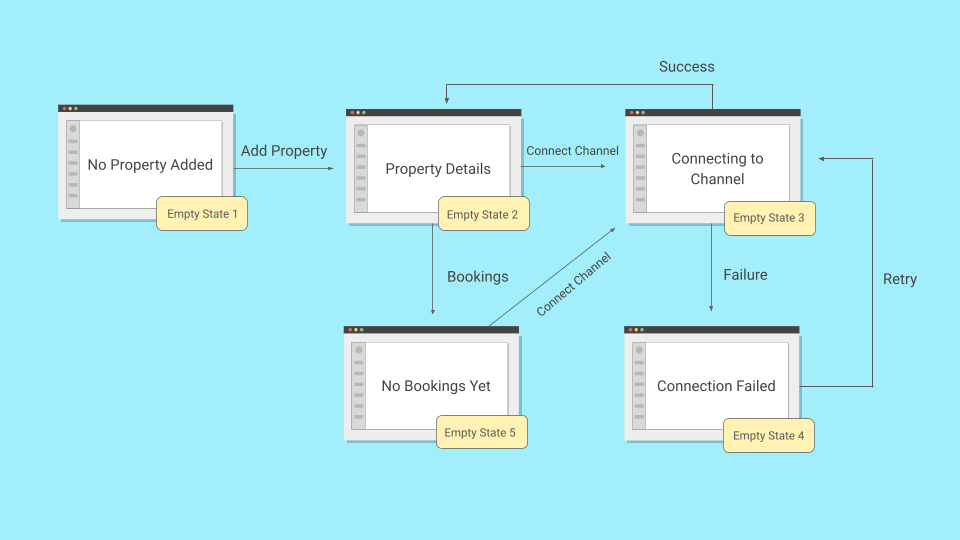
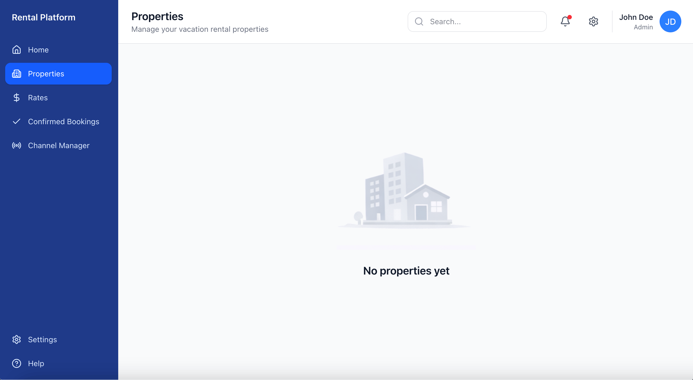
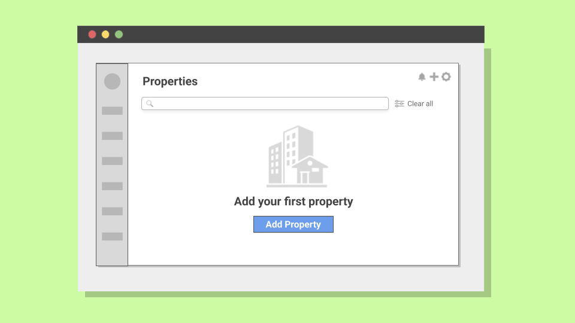
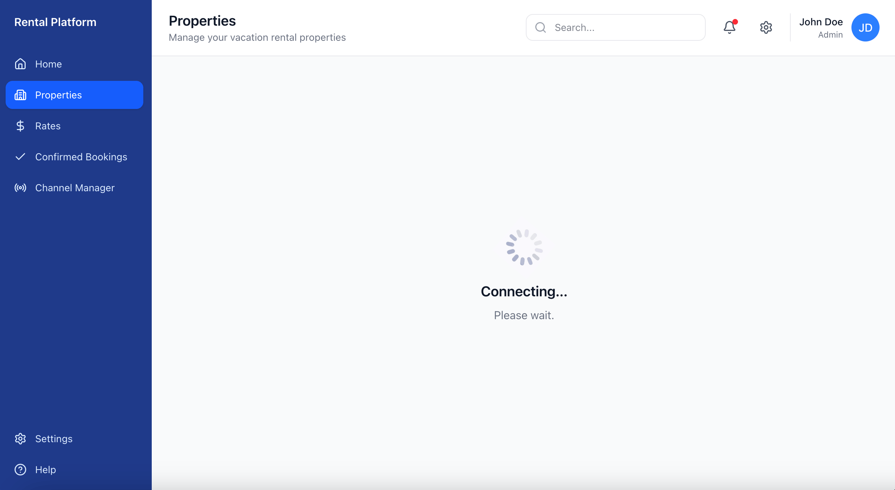
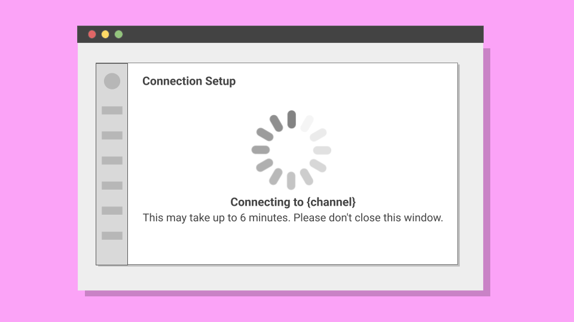

Designing an Empty State Framework

In SaaS platforms, empty states are often afterthoughts. But when 42% of users were abandoning a rental management platform within 10 minutes of starting their free trial, these blank screens turned out to be the key to solving the problem.
Methodology Note
- Company: Anonymized for confidentiality reasons
- Data: Usability testing combined with behavioral validation
- Purpose: Demonstrate systematic empty state design methodology
- Tools: Figma, UserTesting
- Target users: Rental property managers
The Challenge
This rental management platform helped property managers centralize their Airbnb and Booking.com listings. Existing customers found the experience seamless, but new users kept bouncing during onboarding. Specifically at moments when they hit blank screens with no clear next step.
A check-in with the product team revealed that around 42% of new users abandoned the property setup flow within the first 10 minutes. Empty states were treated as blank canvases rather than opportunities to guide users toward value.
Constraints
This was a 30-person company with no dedicated UX research function. The UserTesting subscription I used was a one-time exception, not a recurring budget. Engineering was stretched thin, so any solution had to be copy and design only. No new features, no onboarding flows, no tooltips. The product team was skeptical that words alone could move the needle on a 42% abandonment rate.
The Approach
As one of the UX writers on this project, I partnered with a product designer and audited every empty state in the free trial flow. We identified five critical moments where users hit blank screens. Two of them were causing most of the damage. When I later audited the full product, I found a sixth pattern that applied elsewhere.
Example 1: The Hidden Action
The property listing page for new users presented a blank state with high bounce rates. I conducted a moderated usability test with 5 participants to identify the friction points.
Out of 5 participants, 4 scanned the empty state saying "no properties yet," looked for obvious next steps, and expressed frustration about not knowing how to proceed. The test revealed something unexpected: the problem wasn't the copy, it was the UI. The only way to add a property was through a small plus icon tucked in the top-right corner, and only one participant found it quickly.
The redesigned version replaced the "no properties yet" screen with a centered call-to-action: "Add your first property" accompanied by a brief explanation of what would happen next.
Result: Property creation completion rates during free trial roughly doubled over the first month across 312 property setup attempts.
View statistical validation
Usability testing: I tested with 5 participants. Per Nielsen Norman Group, this uncovers approximately 80% of usability issues, sufficient for identifying major friction points in qualitative research.
Validation at scale: Following implementation across all new user accounts, I tracked property creation rates over 312 attempts. The improvement (roughly doubling) was statistically significant (chi-square test, χ² = 68.0, p < 0.001) and sustained over the first month.
Example 2: The Vague Wait
After adding their first property, users needed to connect to booking channels like Airbnb. The connection process required waiting 4-6 minutes while the system established an API connection. During this time, users saw only: "Connecting. Please wait."
Because of authentication constraints, closing the window caused the connection to fail. But the UI didn't communicate this.
I conducted an unmoderated test with 18 participants split into two groups. Of the 9 participants who encountered the original messaging, 8 abandoned before the connection completed (88.9% abandonment). Some assumed the system had frozen, others grew impatient.
The redesigned message provided specific information: "Connecting to {channel}. This may take up to 6 minutes. Please don't close this window."
In the second group, 8 of 9 participants waited as instructed, representing only 11.1% abandonment. In production, the baseline abandonment rate was around 45%. After implementation, it dropped to around 10% across 374 attempts.
To ensure this wasn't due to external factors, I analyzed abandonment rates on three unchanged flows (registration, billing, verification). No significant variation, confirming the improvement was attributable to the messaging change.
View statistical validation
Sample size: I used 18 participants (9 per group) because I expected a large behavioral difference (>60%) between approaches. For such substantial effect sizes, small samples can reliably detect meaningful differences.
Statistical test: The 77.8 percentage point difference between groups was validated using Fisher's exact test (p = 0.0007), meaning this result would occur by chance less than 0.07% of the time.
Validation at scale: Following implementation, I tracked abandonment rates across 374 connection attempts. The improvement (from ~45% to ~10%) held.
Control comparison: To rule out external factors, I tracked three unchanged flows during the same period: user registration, billing setup, and property verification. None showed significant variation.
The Framework
Before this project, the team had informal guidelines for empty states. Decisions were made ad-hoc, with no shared criteria for what each situation actually needed:
Previous Guidelines
- Keep the tone friendly and helpful
- Add a CTA when possible
- Don't leave screens blank
- Use illustrations if available
- Explain what the feature does
These two examples were part of a larger audit. Across 23 empty states, I found the same patterns repeating. I grouped them into six scenarios based on what was blocking the user and what they could do about it:
New Six-Scenario Framework
Outcome
The immediate results were clear: property setup completion roughly doubled across 312 attempts. Connection abandonment dropped from around 45% to around 10% across 374 attempts.
Results
Six months after developing this framework, I checked in with the product team. Product designers reported using the six-scenario model for new feature development, applying it without needing to reinvent the approach each time.
This outcome demonstrated that empty states are fundamental to how users understand and progress through a product. When approached systematically, they become strategic touchpoints that guide users toward success.